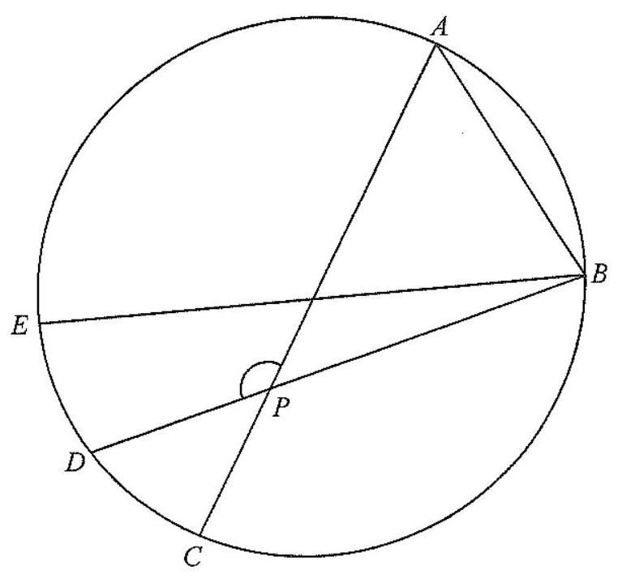

Since AC and BE are both diameters of the circle, they must meet at the centre $O$ of the circle — and they bisect each other there.
So $OA = OB = OC = OE = r$ (all radii).
In $\triangle OAB$, $OA = OB$ (radii), so the base angles are equal:
$$\angle OAB = \angle OBA = 46^\circ$$(base $\angle$s,
isos. $\triangle$)
$P$ lies on the line $OB$, so $\angle POB$ is the exterior angle of $\triangle OAB$ at vertex $O$:
$$\angle POB = \angle OBA + \angle OAB \quad (\text{ext. } \angle \text{ of } \triangle)$$ $$= 46^\circ + 46^\circ = 92^\circ$$In $\triangle PBD$, the angle $\angle APD$ (at $P$) is the exterior angle opposite the two remote interior angles $\angle POB$ and $\angle DBE$:
$$\angle APD = \angle POB + \angle DBE \quad (\text{ext. } \angle \text{ of } \triangle)$$ $$= 92^\circ + 16^\circ = 108^\circ$$Question. \(ABCDE\) is a circle whose diameters \(AC\) and \(BE\) meet at the centre \(O\). \(P\) is the intersection of \(AC\) and \(BD\). If \(\angle ABE=52^\circ\) and \(\angle DBE=20^\circ\), find \(\angle APD\).